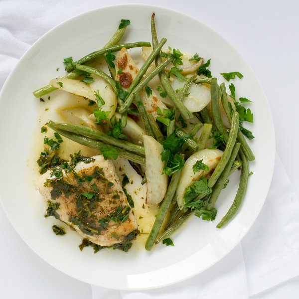

Cod à la Meunière with Roasted Green Beans & Potatoes

Prep Time
45 min
Nutrition (per serving)
536.6 kcalCalories
32.9 gProtein
44.9 gCarbs
26.4 gFat
Full nutrition table
| Calories | 536.6 kcal |
| Total fat | 26.4 g |
| Saturated fat | 9.5 g |
| Trans fat | 0.5 g |
| Cholesterol | 110.5 mg |
| Sodium | 572.7 mg |
| Carbohydrates | 44.9 g |
| Fiber | 7.4 g |
| Sugars | 6.9 g |
| Protein | 32.9 g |
| Potassium | 1719.4 mg |
| Calcium | 110.5 mg |
| Iron | 4.1 mg |
| Vitamin A | 813.2 IU |
| Vitamin C | 57.7 mg |
| Vitamin D | 42.5 IU |
Cookware
Ingredients
- 1 ½ lbcod fillet
- 4 clovesgarlic
- 1 lbgreen beans
- 1 small bunchItalian (flat-leaf) parsley
- 1lemon
- 4 mediumred potatoes
- black pepper
- butter, unsalted
- extra virgin olive oil
- salt
Steps
- Preheat the oven to 450°F and place the rack in the center position.
- Wash and dry the fresh produce.4 medium red potatoes
1 lb green beans
1 lemon
1 small bunch Italian (flat-leaf) parsley - Halve the potatoes lengthwise, then cut each half lengthwise into 6 wedges; transfer the wedges to a baking sheet.
- Place the sheet in the oven and cook the potatoes for about 10 minutes (while you prepare the green beans).
- Trim and discard the ends of the green beans; transfer to a medium bowl.
- Trim off and discard the root ends of the garlic; peel and mince or press the garlic.4 cloves garlic
- Remove the sheet from the oven; add the green beans and garlic to the potatoes.
- Drizzle the vegetables with olive oil and season with salt and pepper; toss to coat, then spread out in an even layer.2 tbsp extra virgin olive oil
1 tsp salt
½ tsp black pepper - Return the sheet to the oven; cook the vegetables, tossing once halfway through cooking time, until they are tender, another 10 to 15 minutes. Once done, remove from the oven.
- Preheat a skillet over medium heat.
- Pat the cod dry with paper towels and place on a plate; season with salt and pepper on both sides.1 ½ lb cod fillet
1 tsp salt
½ tsp black pepper - Once the skillet is hot, add olive oil and swirl to coat the bottom.2 tbsp extra virgin olive oil
- Place the fish in the skillet; cook until it is browned and crisp, 3 to 5 minutes per side. Once done, transfer to a plate.
- While the fish cooks, juice the lemon into a small bowl.
- Using a knife, shave the parsley leaves off the stems at a downward angle, working away from your body; discard the stems and finely chop the leaves.
- Once the fish has been transferred, add butter to the skillet and let it turn a light brown, then remove the skillet from the heat and stir in the lemon juice and ½ of the parsley (save the rest for the green beans and potatoes).4 tbsp butter, unsalted
- Sprinkle the green beans and potatoes with the remaining parsley; toss to combine.
- To serve, place the fish on a plate, spoon the butter sauce overtop, and add the roasted green beans and potatoes on the side. Enjoy!